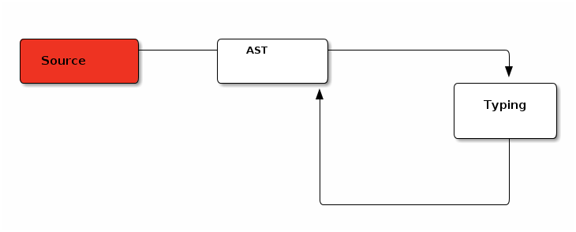

A modern approach to Portugol
Table of Contents
1 Introduction
This document describes a new implementation of the VisuAlg dialect of Portugol, a language used to teach structured programming to students in Brazilian high-schools and universities.
This new implementation is primarily motivated by two things: first, the available VisuAlg implementation has some annoying bugs, which can be detrimental to a first contact with computer programming. Also the current VisuAlg Portugol tools have only been released for the Windows environment and is closed-source. The former impedes the use on Unix-platform such as Linux or Mac OS and the latter precludes making the enhancements available as a set of patches.
The open sourcing of the compiler aims to continue Portugol's tradition in being a learning base. We aim to extend it as a learning base for compiler implementations.
Related work are summarized in Sec. #sec:related.
2 The language
The dialect of VisuAlg Portugol is language from the family of so-called structured programming. As such, it bears a strong similarity to Pascal. However, the language constructs are in Portuguese.
The language is imperative in nature and thus divided into instructions and expressions. These are summarized in Fig.
2.1 Operators
All binary operators are associative to the left, even though it is not always the choice in programming languages, in order to simplify learning precedence rules. The operators, unary and binary, are ordered as follows, using \(\prec_{p}\).
\(a {{{prec}}} b\)
3 Oddities of VisuAlg
This is an incomplete description of some of the weird or buggy behaviors found in VisuAlg 2.5:
- Declared variables are initialized (should it be so ?). If we want to enforce a declaration step in the language, it might be a better idea to force a separate, explicit and mandatory initialization.
- Scope of elements.
There seems to be no scope, or, said otherwise, every
variable declared inside an algorithm seems to be global.
The sum computation in line 8 uses the vector
awhich is only defined in the further1section.
1: funcao somamatriz(n: inteiro): inteiro 2: var 3: i, j, soma : inteiro 4: inicio 5: soma <- 0 6: para i de 1 ate 10 faca 7: para j de 1 ate 10 faca 8: soma <- soma + a[i,j] 9: fimpara 10: fimpara 11: retorne soma 12: fimfuncao 13: 14: algoritmo "semnome" 15: var 16: i, j : inteiro 17: a : vetor [1..10,1..10] de inteiro 18: inicio 19: para i de 1 ate 10 faca 20: para j de 1 ate 10 faca 21: a[i,j] <- i + j 22: fimpara 23: fimpara 24: escreva ("Resultado: ", somamatriz(5)) 25: fimalgoritmo
3.1 Type policy
Even though no type discipline is mentioned in the documentation, most cases encountered point at a weak typing system, at least in the implementation.
A weak typing discipline has two main drawbacks:
- Bugs might go unnoticed, undetected prior to the execution of the program;
- This forces students to learn conversion rules which can be confusing in a first approach to programming. We will introduce type-safe conversion function as needed to get rid of it.
- Even though it is natural for a mathematician to think of an integer as also being a real number, a strong type system forces to think of algorithmic as different world. After normal integers and floating-point numbers are machine abstractions which are only approximately related to their mathematical counterpart.
Following the tradition of strongly-typed languages, types should guide learners to think about what they are doing. Thus silent conversion from one type to another is usually not considered a good thing.
3.2 Performance
VisuAlg is very slow. Maybe because it has to show the whole environment by default. A simple enhancement is to hide the environment by default and activate it only on demand.
5 Implementation
The new interpreter is written in OCaml, a functional language well-tailored to the implementations of compiler and most generally any symbolic computation. It is also known to be quite efficient, has both a byte-code and a native compiler and is therefore available wherever a C compiler can be found.
The goal of the implementation is to be modular in order to make it as easy as possible to add or change a component.
The same interpreter can be used through three different views, to suit different users:
- Command-line intepreter;
- A REPL Toplevel;
- A GUI based on web technologies.
5.1 Phases
As modern compilers, the compiler proceeds in distinct passes. Even more so as to make components distinct and plugable.

5.2 Typing
This is a separate analysis, made prior to any execution. The interpreter can be executed in the knowledge that there will be no typing problems during execution, with the exception of user inputs.
This is made using type-checking rules. The language is strictly monomorphic and therefore has simple rules.
5.3 Other analyses
Apart from typing, other small static analyses are already implemented, to be run prior to the interpretation of the program.
5.3.1 Unused variables
Activating the -strict option will transform the unused variables warnings
into errors.
5.3.2 Bound checking
Out of bounds access for arrays and matrices is checked at run time.
5.4 Data structures
Should we use hash-mapped tries instead of maps ?
5.5 Backward compatibility
The -old switch activates the old more lenient behavior if it is needed to
get old version to work.
6 Conclusion
We have released a first version of a new interpreter of VisuAlg Portugol, with stricter type policy.
7 Future work
7.1 Everything should be an expression
Commands \(\approx\) expressions of type unit
7.2 Toplevel
7.3 Visitor
7.4 Analyses
7.5 GUI with Js_of_ocaml + Static HTML
7.5.1 Technical notes
- For the CSS, use Bootstrap/ Maybe Bootflat:
- And FontAwesome